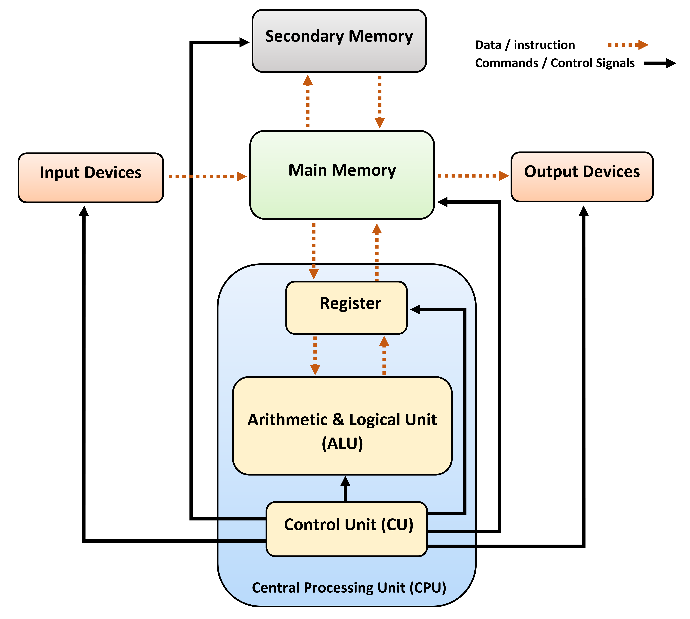

Code
3 + 14 
In this course, I aim to cover introductory topics in software engeneering and Python programming in short.
This teaching material is prepared for programming/CS course for OIST new students that was cancelled due to low interests.
You can open this notebook in Google colab or download .ipynb file from the right pane. Please understand that Colab notebook is a variant of jupyter notebook customized by Google, so many features are different from standard jupyter notebook or jupyter lab.
In this course, we use Google Colab for exercise environment. After opening the link, select ‘Save Copy in Google Drive’ from the ‘File’ tab.
Colab notebook consists of cells, which can be either code or document.
[ ] to execture the program in the cell. The executed result is inserted below the cell.# for headings, - for lists, and 1. for numbered listsYou can edit the cell by double-clicking it. Some shortcuts are available:
Execute the cell below.
3 + 14Let’s recall that mondern compueters have this kind of architecture:
from io import BytesIO
from urllib import request
from PIL import Image
fd = BytesIO(
request.urlopen(
"https://upload.wikimedia.org/wikipedia/commons/0/08/Computer_architecture_block_diagram.png"
).read()
)
Image.open(fd)
This is called von Neumann architecture and the basis of all modern computers. However, it is unclear how you can give instructions to the computer. Software, or program, is a way to do that. So, basically, software is the set of instructions to what to do. We can send software to the computer, and the software is stored in its memory and executed.
Note that software can be either very lower level or higher level. Computer itself can only understand very lower level language. For example, in X86-64 assembly which is common in today’s intel and AMD desktop CPU, \(3 + 1\) in Python is written as below.
mov al, 3 ; Move 3 into the AL register
add al, 1 ; Add 1 to ALThis is quite low-level operation, and we, lazy programmers, don’t want to write this kind of very low-level operation by hand at every time!
Thus, we need a high-level language that can bridge our thoughts and low level machine language. There are two types of laguages with different execution scheme:
In compiled language, the program is converted to the machine language and then executed. For example, 3 + 1 is converted to mov al, 3; add al, 1 as the example above. Because it’s once covnerted to machine languages, the code in compiled langauges are as fast as machine language.
Another one is interpreter language. In this case, software is executed within another software called interpreter without compiling it to machine language. They are often slower than compiled languages, but they are easier and good for begginners. Python fits this category, and Python interpreter is running behind this notebook on a part of really big computer clusters in Google.
Also, there are some kinds of programming languages with different philosophy:
Python is an object-oriented language, but it inherits lots of features from procedural langauges. We generally focus on the Python as procedural languages in the first half of this course, because it may be the easiest way to get into programming.
Prease also refer to the official tutorial. We can use +-*/ for basic arithmetic operations.
3 + 5 * 423Power is **, and the modulo is %.
(2 ** 4) % 106Addition is evaluated later than multiplication and division. We can use () to change the order.
(3 + 5) * 432Compute how many seconds are in a day.
In the last chapter, we learned a bit about some philosophy of programming, and Python inhereted many things from procedural programming. So, what it procedural langauge? The programming model behind is that, in short, we have variables, and we do computations by changing the variable.
Variable is the most important concept. You may think of it is a container that has some value, and we can name it.
var1 = 30
print(var1)
var1 = 40
print(var1)30
40= is the syntax that assigns some value into the variable. There are some operators that changes the value in the variable in place.
print is what I’m not explained yet, but please understand that it just shows the content of the given variable (or, more precisely, the evaluated result of the given experssion).
var1 += 40
print(var1)80In Python, what we can assign into the variable is called expression. Expression includes numerical values, texts, and values themselves.
var1 = 20
var2 = -100
var3 = var2
var3-100In Colab/Jupyter notebook, the last expression in the cell is printed out. In the cell above, the content of var3 is printed out.
On the other hand, the assignement like var1 = 20 is called statement. If the cell ends with statement, the notebook doesn’t show anything.
The power of the computer is in its speed. Todays computers can executre millionds of operations in a second. Thus, the most basic usage to utilize the computation power of computers is to make it repeat something. for loop the most basic way to do this. There is a range object that is often used with for loop, which represents certain numerical range.
range(10)range(0, 10)For loop repeats something with this range.
for i in range(10):
print(i)0
1
2
3
4
5
6
7
8
9Here, the program in the for loop is executed with variable i with all values in the range [0, 10) assigned.
Wait, did you notice this redundant four spaces?
for i in range(10):
□□□□print(i)These spaces are called indentation and used to indicate that these statements are inside the for loop block. This indentation is used everywhere in Python, as we’ll see later. Note that two spaces and three spaces also work, but you should to have the same indentation width throughout your code.
Let’s go back to the for loop. It’s useful to accumulate values by for loop.
sum_0_100 = 0
for i in range(101):
sum_0_100 += i
sum_0_1005050Compute \(\sum_{i=0}^{100} 2^k\).
The for loop is powerful, but not very frexible. It does the same thing everytime. However, we sometimes want to make the computer to do a differnt thing sometimes. Here, if statement is useful. if statement works with boolean values.
TrueTrueFalseFalseIn Python, True and False are boolean types. Some expression returns boolean type as the result. For example, comparing numbers by > and < returns True or False.
10 < 40True40 > 10TrueWe can use a == b for checking two numbers a and b are equal. Also, >= and <= represent \(\geq\) and \(\leq\).
40 == 40TrueThe if statement executes the code inside the block if the expression is evaluated as True.
var_a = 100
if var_a > 90:
print("Hey")HeyHere, print("Hey") is executed because var_a > 90 is True.
if var_a > 100:
print("No hey")If the given expression is evaluated as False, nothing happens.
We can use if statement combined with for loop. For example, we can accumulate the sum of even numbers between \(0\) and \(100\) by:
even_sum_0_100 = 0
for i in range(0, 101):
if i % 2 == 0:
even_sum_0_100 += i
even_sum_0_1002550if statement can have else branch if needed. If the given expression is False, statements in the else block is executed.
if var_a > 100:
print("Hey")
else:
print("Not hey")Not heyIf you need more branches, if statement can be really complex with elif (shorthand of else if) blocks.
if var_a > 100:
print("Cond 1")
elif var_a == 100:
print("Cond 2")
elif var_a == 99:
print("Cond 3")
else:
print("Cond 4")Cond 2The condition also can be a bit more complex. Python has and and or operators for boolean values, which does logical operations.
True and True, True and False, False and False(True, False, False)True or True, True or False, False or False(True, True, False)These operators are often combined with if statement to express complex conditions.
var_b = 200
if var_a >= 100 and var_b >= 200:
print("Hey!")Hey!Fix the program below (From https://utokyo-ipp.github.io/2/2-3.html).
x = -1
if x < 3:
print("x is larger than or equal to 2, and less than 3")
elif x < 2:
print("x is larger than or equal to 1, and less than 2")
elif x < 1:
print("x is less than 1")
else:
print("x is larger or equal to 3")x is larger than or equal to 2, and less than 3Python has some builtin data types. So far, we used int type.
type(30)intOn machine, int types have a simple representation by binary. Let’s see it:
bin(4)'0b100'We call the minimum unit of this binary representation (i.e., 0 or 1) bit. Although there is some tricks to where we store the bit for minus (-), for intergers, that’s it.
But, for general real numbers like 3.14, the situation is a bit complex.
type(3.14)floatReal values are called float type in Python and some other programming languages. What does it mean? This example of representing \(12.345\) from Wikipedia article may be easy to understand.
\[ 12.345=\underbrace{12345}_{\text{significand}}\times\underbrace{10}_{\text{base}}\underbrace{{}^{-3}}^{\text{exponent}} \]
So, in computer, real values are stored by two intergers (significand and exponent) with the fixed base. Base \(2\) is commonly used. This approximation of real numbers are called floating-point numbers, from which the type name float is derived.
On most computers available nowadays, Python’s float type has 1 bit for sign (\(+/-\)), 11 bits for exponent, and 52 bits for significand. Thus, it has some limitations in precision.
10 / 33.3333333333333335The answer should be \(3.33333....\), but because it has only 52 bits for significand, it can’t express \(3.333333333333333\).
This limit of floating point representation sometimes causes large errors in some scienctific applications, and there are bunch of researches how to deal with the error.
BTW, please it is worth noting that the division operator / always returns float type. To get the interger as the result of division, use // instead.
8 / 4, type(8 / 4)(2.0, float)8 //4, type(8 // 4)(2, int)Display the largest number in Python float.
We can use “” and ’’ to represent texts. Both have the same effect.
"Hey, programming is fun!"'Hey, programming is fun!''Hey, programming is fun!''Hey, programming is fun!'This is called str type (prefix of string).
List is a convenient data type to store multiple values in one variable. We can construct a list by [].
["Hey", 2, 4, ["Yay", "Me"]]['Hey', 2, 4, ['Yay', 'Me']][] has another meaning: it can be a special operator for getting a part of list and str.
a = [1, 2, 3, 4, 5]
a[0]1We can update the value with this indexing syntax.
a[0] -= 1
a[0, 2, 3, 4, 5]The indexing starts from zero. If the index is negative (say, -i, it indicates length of the list - i - 1.
a[-1], a[-2](5, 4)There is a special syntax called slice combined with []. a[i:j] returns a part of the list from index i to j - 1.
a[2: 4][3, 4]We can skip either start and end of the slice. Then, the default values (0 and the length of the list) are used. We can even skip both and write a[:], but it’s just the same as a.
a[2:], a[:4], a[:]([3, 4, 5], [1, 2, 3, 4], [1, 2, 3, 4, 5])We can concatanate lists by +. If you just want to add a value, you can use the syntax list.append.
a.append(-3)
a[1, 2, 3, 4, 5, -1]a + [-2, -1][1, 2, 3, 4, 5, -1, -2, -1]Same operations can be done for str.
"Hey, programming is fun!"[: -4] + "not fun!"'Hey, programming is not fun!'Because text is so common in human society, there are plenty of methods to manipulate str. One example is the templating string.
"{} is fun".format("Programming")'Programming is fun'With this str.format, we can embed arbitary string and some values implicitly convertible to str to the point where {} indicates in the string. Because this is so common, Python has a special syntax for formatting called f-string.
f"The answer of 1 + 2 = {1 + 2}"'The answer of 1 + 2 = 3'f-string is so special in that inside {} we can write any Python expression. The result is converted to string and embed in the result.
str in the machine is just numbers. We can convert it like:
b = "Hey".encode("utf-8")
bb'Hey'b has a special type called bytes, which is a specialized list for small intergers. Actually it’s just a sequence of numbers
b[0], b[1], b[2](72, 101, 121)So, H is 72, e is 101, and y is 121 on the machine. For complex characters like ☀, more complex rules are used to convert it to numbers. See UTF-8 if you are curious.
Construct a list that contains all English alphabet in small case.
Note that you can convert number to str by:
a = 97
a.to_bytes().decode("utf-8")'a'Very similar to list, but has a bit different syntax and immutable. Use () to construct tuple.
(1, 2, "Sun", 4)(1, 2, 'Sun', 4)We don’t need to use () in some situations. For example, as the last value of Notebook cell.
1, 2, "Sun", 4(1, 2, 'Sun', 4)But I’d recommend you to always use () for tuple, especially for begginers.
Because tuple is immutable, we can’t update values in tuple.
t = (1, 2, "Sun", 4)
t[0] += 4--------------------------------------------------------------------------- TypeError Traceback (most recent call last) Cell In[97], line 2 1 t = (1, 2, "Sun", 4) ----> 2 t[0] += 4 TypeError: 'tuple' object does not support item assignment
+ is allowed because it creates a new tuple.
t + (5, 6)(1, 2, 'Sun', 4, 5, 6)Dict is a set of key and value pairs with fast access by key. We can make list by {} syntax.
user = {
"Name": "Me",
"ID": 345,
0: 10,
}We can use the index syntax to dict, though slicing [:] is not supported.
user["Name"]'Me'It sounds a bit weird, but None is the special type that represents nothing.
NoneThe type of None is NoneType, and None is the only value of this type.
type(None)NoneTypeNone is surprisingly useful in programming when some values can be missing, but maybe difficult for begginers to understand its value.
Function is a fundamental concept in most programming languages. Note that it’s different from function in math. It’s more of an independent set of statements.
def function_name(): is a syntax for defining a function.
def my_function():
a = 0
b = 0That’s it. We can call function by function_name() syntax
my_function()Nothing happend. To get some effects from function, function can return value by return ~ syntax.
def two():
return 2two()2If there’s no return in the function, the evaluated value of function call is None.
type(my_function())NoneTypeA typical benefit of making a function is reusability. For example, think about this code that tries to format month and date.
month = 9
date = 31
if month < 10:
month_str = f"0{month}"
else:
month_str = f"{month}"
if date < 10:
date_str = f"0{date}"
else:
date_str = f"{date}"
month_str + "/" + date_str'09/31'It’s quite easy code, but it is still a bit tiring to write this many times. So here comes the function. It can take arguments inside (), and we can pass some values when calling a function.
def format_date_number(number):
if number < 10:
return f"0{number}"
else:
return f"{number}"
format_date_number(9) + "/" + format_date_number(31)'09/31'Here, we could simplify the code by defininng the function format_date_number. By spliting code into functions, we can reduce the complexity of our coding.
As long as reusability, there is another clever way to use function, called recursion.
For example, let’s assume that we want to compute \(\sum_{i = 0}^{100} i\). As we learned, we can compute this easily by for loop. However, we can do the same thing using a function recursion.
def sum_to_0(i):
if i == 0:
return 0
else:
return sum_to_0(i - 1) + i
sum_to_0(100)5050Because \(\sum_{i = 0}^{k} i = k + \sum_{i = 0}^{k - 1} i\) for all \(k > 0\), we can call the function sum_to_0 in the function sum_to_0. This technique is called recursion. I’d say that for loop is often better because it’s simple, but sometimes recursion works like a charm.
Implement Euclidian Algorithm using recursion.
Variable scope around the function is so important. You can remember two rules:
var_out = 100
def scope_demo():
print(var_out)
var_in = 200
scope_demo()
print(var_in)100--------------------------------------------------------------------------- NameError Traceback (most recent call last) Cell In[143], line 8 5 var_in = 200 7 scope_demo() ----> 8 print(var_in) NameError: name 'var_in' is not defined
So, while we can read var_out inside scope_demo function, var_in is only available inside the function.
Importantly, we can’t change the value of outside variable by assignment inside a function.
var_out = 100
def scope_demo2():
var_out = 200
scope_demo2()
var_out100It’s a bit confusing, but when a new variable is assigned in a function, it is treated as the variable inside the function scope. If you really want to avoid this, there are two ways:
globalvar_out = 100
def scope_demo3():
global var_out
var_out = 200
scope_demo3()
var_out200By placing global var_out, it magically worked. Also, we can change the value of dict inside a function.
var_out = {0: 100}
def scope_demo3():
var_out[0] *= 2
scope_demo3()
var_out{0: 200}This is maybe a bit weird behavior for you (and even for me). But my recommendation is avoid referencing variables outside the function as much as possible. It can confuse your brain. Also, not depending on outside variables improves copy-pastablity of your code. I mean, if your code depends on some variables outside the function, you need to copy everything to another file if you want to use. But, if the function is completely independent, it just works by only copy-pasting the function.
Note that your Python can work without writing any function, but I recommend to put everything inside function in your Python code. That will make your life easier.
We can annotate function arguments with type.
def typed_function(a: int, b: str) -> str:
return f"a: {a} b: {b}"The value after -> indicates the type of return value. It is good to annotate arguments for readability.
So far, we learned that Python has many builtin types like list or dict. You can define you own one using class syntax.
class YourClass:
passy = YourClass()
type(y)__main__.YourClassThat’s it. Your class can have some special functions called method, that is called by .method() syntax. For example, "{}".format is a method of str class.
class ClassWithMethod:
def method(self) -> int:
return 5ClassWithMethod().method()5Your class can have any values called members. To initialize your class with specific members, you can use a special method called __init__.
class ClassWithMembers:
def __init__(self):
self.name = "Me"
self.number = 10c = ClassWithMembers()
c.name, c.number('Me', 10)The special function used to create an instance of class is called constructor, and it also can take arguments.
class ClassWithFlexibleMembers: def init(self, name: str, number: int) -> None: self.name = name self.number = number
c = ClassWithFlexibleMembers(“Mew”, 33) c.name, c.number
Note that the return type of __init__ is always None. __init__ is called in the constructor inside Python, and it’s not equal to the constructor.
Python comes with many module, which are sets of convenient functions anc classes with a specific purpose. Let’s use some.
import math
math.pi3.141592653589793Here, we’re importing the standard math module with many convenient mathematical functions.
math.ceil(5.4)6Module import has another syntax: if you want to import only a specific set of functions or classes, you can use from module import ~ syntax.
from math import ceil
ceil(5.4)6